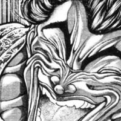

ㅋㅋㅋ 시원해
ㅋㅋㅋ 시원해
둘다아님 걍 급정거하려다가 돌아버린거같음
브레이크밟음 차량무게가 앞으로쏠림 뒷바퀴에 그립이 약해짐 바퀴가잠기고 그대로 휠락
언더 오버라기보단 급하게 브레이크 밟다가 왼쪽만 휠락 걸려서 제동력에 차이 생겨서 돌아버린거 같음. 일반 승용차에 휠락 걸린다는건 abs도 끄고 다니는다는 소린데...진짜 병신인듯
언더스티어: 핸들을 꺾었는데 꺾은만큼 안돌아감
오버스티어: 핸들을 꺾었는데 꺾은만큼 더돌아감
미세하게 틀어진 핸들이라고 가정하면...
오버스티어인가...???
뒷바퀴가 옆으로 미끄러지며 오버스티어 발생이라네요 ai분석으론
니 ai 바꿔라 ㅋㅋㅋ 저거 하나 분석을 못해서 주인 망신을 주네
언더 오버는 운전자가 원하는 각도보다 더 돌아가냐 덜 돌아가냐로 이해하면됨
병신 ㅋㅋㅋㅋ
운전도 못하고 보복도 못하는데 보복운전이라고 해야되나요 깔깔
왜 혼자 발라당 뒤집히는거야? 배 만져 달라는건가?
휠락이라고 급제동하면 타이어가 안 돌고 그냥 멈춰서 타이어만 갈려나가면서 미끄러짐. 한쪽만 휠락이 걸려서 제동력에 차이가 생기니 옆으로 빙글 돌아버리는거지. 보통은 이를 방지하기위한 abs라는 기능이 있는데(거의 모든 승용차에 탑재되어있음) 그것도 일부러 끄고 다니는것 같음
배 만져 달라는거 맞네!!!
그거 끌수있는거였어??
보통 못 끄는데 퓨즈 뽑아서 강제로 끌 수 있음.
양아치들 드리프트니 뭐니 개지랄 떨 때 그렇게 함.
트렉션컨트롤 부터 대부분의 운전 안정화 장치도 다 꺼져서 조낸 위험함..
ㄹㅇ 목숨내놓고 사네
일부 스포츠카는 그런 주행보조기능 스포츠모드로 설정하거나 하면 끌수도 있을걸
abs는 신이고 심판은 병신이다
복종의 표시인거지
뒤에 있다가도 앞으로 와서 배 까뒤집을정도면
얼마나 성공하고싶은지 감도 안잡힘
배방구 해줘야겟네
저거 날라가는거 사람임?
앞 범퍼같음
근디 사람 같긴해 ㅋㅋ


통쾌했어요
브레이크를 봐가면서 밟아야지 ㅋㅋㅋㅋ
아니 아무리 그래도 저 블박차는 사고가 났는데 차 세우지도 않고 그냥 가냐... 나였으면 바로 차 세우고 옆에 가서 존나 비웃고 갔을텐데...

그러다가 칼쳐맞는거임 ㅋㅋ 긁어부스럼은 굳이 만들 필요가 없음
바로 차돌려서 묘기점수 7점 드립니다 하고 왔어야하는데 걍 가버리네
ABS는 워쩐겨?
어흐 션~하다
이건 차 세우고 티베깅 해야하는거 아닌가
데굴
블박차가 무기 사용했네 치사하게 ㅉ
내가 보기엔 제동걸때 하필이면
우측 비포장도로에서 흘러들어온 모래때문에
오른쪽 앞바퀴가 그립력 잃고 미끄러진거 같음
모래나 블랙아이스에 미끄러질때 가속해서 극복해야되는데
생존본능때문에 브레이크를 더 쎄게 밟으니깐 차가 옆으로 미끄러지는거
치사하게 거북이 등껍질썼네
뭐하냐 저 병신은 ㅋㅋㅋㅋㅋㅋㅋㅋㅋㅋㅋㅋ
사고 빡세게 난 앰창차 주워와서 abs가 동작 안한거냐? 아님 드리프트 한다고 온갖 안전장치 다 끄고 까먹은거냐;;;
사람 날라가는건 줄 알았는데 범퍼구나
피유우우웅 ㅋㅋㅋㅋ
그걸 그냥 가네
바로 후진기어 넣고 가서
푸힣 하고 쪼개고가야지
넌 운전 하지마라.
스키드 마크 하나씩 슝~슝~ 하고 생기는 게 뒤차가 미사일 쏴서 맞고 날아가는 거 같당 ㅎ
아이템전이었나보네
바퀴 잘 정렬된상태인데 급감속했다고 미끄러지는거 보니 abs꺼놓은 양카인갑네
ㅇ어 어 거기 주차하면 안되는데??
저게 언더 스티어였나? 언더 오버 구별이 안가네